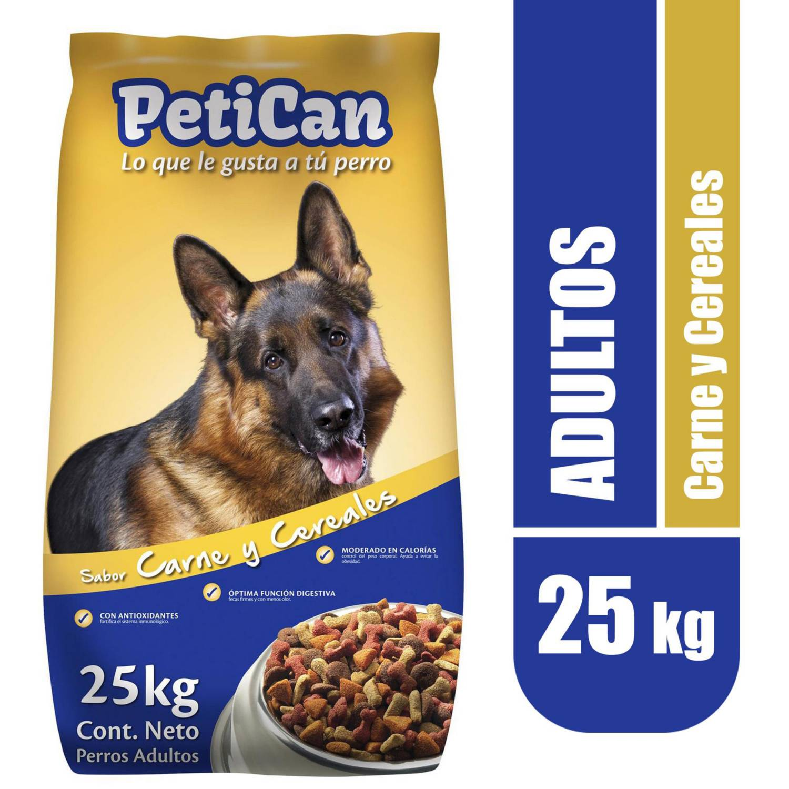

EN OFERTA
$31.990
$26.990
Petican 25kg - Carne y Cereales - Perro Adulto
Descripción
Este Alimento seco para perro adulto, de 25 kg, sabor carne y cereales, marca Petican,
es otra de las buenas opciones que te ofrecemos para alimentar a ese integrante tan
importante de la familia: tu mascota. Preparado en base a carne y cereales, este
producto está desarrollado para alimentar a perros adultos de razas medianas y grandes;
por eso contiene todas las vitaminas, minerales y nutrientes que ellos necesitan para
mantenerse saludable y en las mejores condiciones físicas.
En stock 19 unidades
EN OFERTA
$23.990
$19.990
Cachupin 15kg - Carne -Perro Adulto
Descripción
El Alimento para perro adulto sabor carne y arroz Cachupín es lo que tu perro necesita para mantenerse fuerte,
sano y repleto de energía para disfrutar de los días de juegos en el jardín o los paseos al aire libre. Ofrece
una nutrición completa y balanceada manteniendo su condición física, sin sentirse limitado por la edad,
ya que es ideal para perros adultos. Además, su alta calidad comprobada y garantizada,
en conjunto con la capacidad de ser de fácil digestión, brindan tranquilidad de saber que tu mejor amigo estará
muy bien alimentado, con el plus del sabor irresistible.
En stock 17 unidades
EN OFERTA
$26.990
$23.990
Master Dog 15kg - Perro Adulto
Descripción
El Alimento perro adulto carne Master Dog es saludable para tu mascota,
ya que consiste en nuggets con omega full, un ingrediente que combina proteínas,
ácidos grasos y fibras vegetales, responsable de que su pelo se vea más brillante
y de que tenga una piel sana. Puedes darle de comer a tu perro en el jardín o en el
interior de tu casa de acuerdo con tus preferencias.
En stock 8 unidades
EN OFERTA
$26.990
$23.990
Master Dog 15kg - Carne y Leche - Cachorro Razas Medianas y grandes
Descripción
Alimento completo y balanceado para tu perro Cachorro Raza Mediana y Grande,
menor a 18 meses y para madres gestantes y en lactancia. Contiene más proteínas para
un mejor desarrollo muscular y más materia grasa para entregarle toda la energía que
necesita en sus juegos.
En stock 4 unidades

EN OFERTA
$28.990
$23.990
Petizoos 15kg - Carne y Arroz - Perro Adulto
Descripción
La principal característica del Alimento para Perro Petizoos es la composición
de cada uno de los bocaditos, pues presentan una consistencia semi húmeda,
además de su sabor, pues a tu mascota le encantará el sabor de la carne y el arroz.
Se presenta en prácticas bolsas de 15 kilogramos en un envase fácil de maniobrar.
En stock 6 unidades

EN OFERTA
$12.700
$10.795
Knino-Dog 25kg - Carne y Cereales - Perro Adulto
Descripción
KNINO DOG es un alimento 100% natural, para perros adultos,
que posee la mejor relación precio-calidad del mercado y contiene
todos los nutrientes esenciales, en las cantidades y proporciones adecuadas.
Su composición nutricional asegura un óptimo estado de salud,
permitiendo que su mascota tenga los niveles de energía que requiere sin engordar,
al ajustar la ingesta diaria a las dosis recomendadas.
En stock 20 unidades

EN OFERTA
$14.990
$11.090
Master Cat 3kg - Salmón y Sardina - Gato Adulto
Descripción
Descripción. Master Cat sabor salmón, contiene fibras naturales que promueven
una digestión sana y estimulan el desplazamiento de las bolas de pelo a través
del sistema digestivo, previniendo el estreñimiento en tu gato. Además
contiene Omega 3 que permite mantener una piel sana y un pelaje brillante.
En stock 10 unidades

EN OFERTA
$29.990
$24.990
Cat Chow 8kg - Carne, Pollo y Pescado - Gato Adulto
Descripción
Una buena nutrición es fundamental para proteger la salud de los gato. Es por eso que
desarrollamos Purina Cat Chow Defense Plus, elaborado con una selección de ingredientes
naturales y mejorado, con la inclusión de un prebiótico natural.
En stock 12 unidades

EN OFERTA
$14.500
$9.990
Kong Extreme - Xlarge y Xgrand - Juguete para Perros
Descripción
El KONG Extreme es la versión más duradera de nuestro juguete KONG original.
Se recomienda el compuesto de goma negra super resistente y duradero para
los masticadores más enérgicos. Perfecto para rellenar con bocados. Este juguete
ayudara a tu perrito a reducir el aburrimiento y la ansiedad por separación.
Con su bote irregular es ideal para juegos de buscar y recoger.
En stock 4 unidades

EN OFERTA
$19.990
$15.000
Barkbone Stick - Peaunt Butter Flavor - Masticador para perros
Descripción
BarkBone Masticador para perros: perros que son muy mordedores, este hueso está hecho de nylon,
material muy duradero que ayuda a expresar los instintos naturales de tu perro;
con forma de palo e infusionado con sabor a mantequilla de cacahuete para darle doble entretención a tu perro.
En stock 23 unidades

STOCK AGOTADO
$5.990
Pawise Cuerdas - Con textura - Juguete para perro
Descripción
Estas cuerdas coloridas están diseñadas con texturas para que tu perro pueda morderlo.
El mordedor Pawise promueve la salud de sus encías y dientes. Es un juego interactivo,
que ayuda a reducir el estrés de tu perro y puedes jugar junto con él, y ayudarlo a que haga
ejercicio.
Sin stock

EN OFERTA
$21.990
$18.500
Twin pack Flexi Chew - Sabor pollo - Juguete para perros
Descripción
Pack de dos huesos para roer y morder sabor pollo y natural.
Para perros de mordida moderada de hasta 7 kilos de peso tamaño: 9,5 cm aprox.
En stock 12 unidades

EN OFERTA
$22.990
$16.990
Rascador Corrugado - Hierb gatera -Juguete para gatos
Descripción
Combina la suavidad de la felpa con el yute duradero, generando el espacio perfecto
para que tu gato pueda recostarse, dormir y rascar. El producto tiene un gran diseño
y está compuesto por un poste de cuerda de yute natural para rascado.
En stock 28 unidades

EN OFERTA
$12.990
$4.990
Pescado interactivo - Todo tamaño -Juguete para gatos
Descripción
Debido a un sensor táctil integrado, tu gato solo necesita palmaditas o tocar
el cuerpo del pescado, se flotará y se moverá automáticamente para atrapar los ojos del gato.
En stock 11 unidades

EN OFERTA
$19.990
$10.990
Pelota para gatos - Todo tamaño -Juguete para gatos
Descripción
Sus materiales son de alta calidad, resistentes al agua y es muy fácil de usar.
Solo la debes cargar con un USB y elegir el modo de intensidad que prefieras: tranquilo,
normal y activo. Además, si quieres seguir regaloneando a tus michis, lo puedes hacer
con el Candy Brush.
En stock 14 unidades

EN OFERTA
$2.990
$2.190
Juguete Varita Para Gatos - Hierba Gatera -Juguete para gatos
Descripción
Varita con figura de hierba gatera y plumas que incentivará todos los sentidos de tu gato,
estimula a tu felino hacer ejercicio.Las varitas son perfectas para el ejercicio diario.
En stock 7 unidades